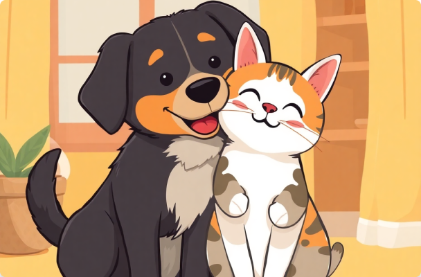

Transformando Vidas,
Uma Pata por Vez
Conheça nossa história de amor pelos animais e como estgamos construindo um futuro melhor para pets abandonados.
Conheça nossa história de amor pelos animais e como estgamos construindo um futuro melhor para pets abandonados.